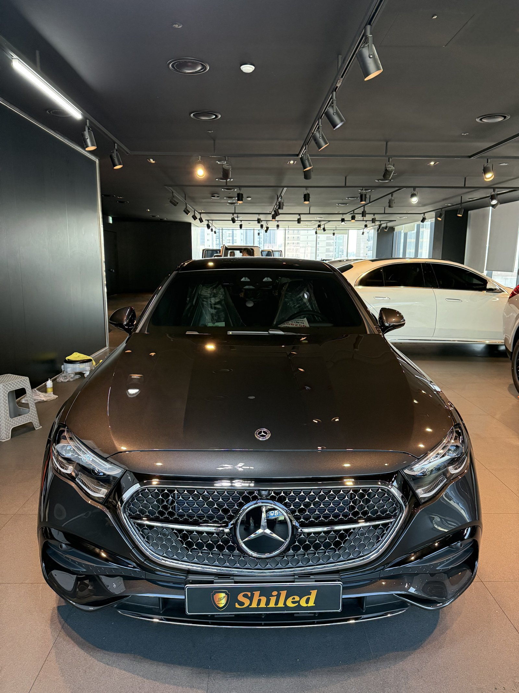
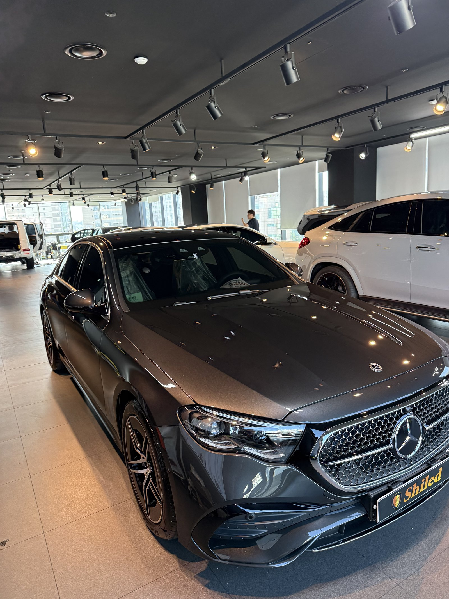
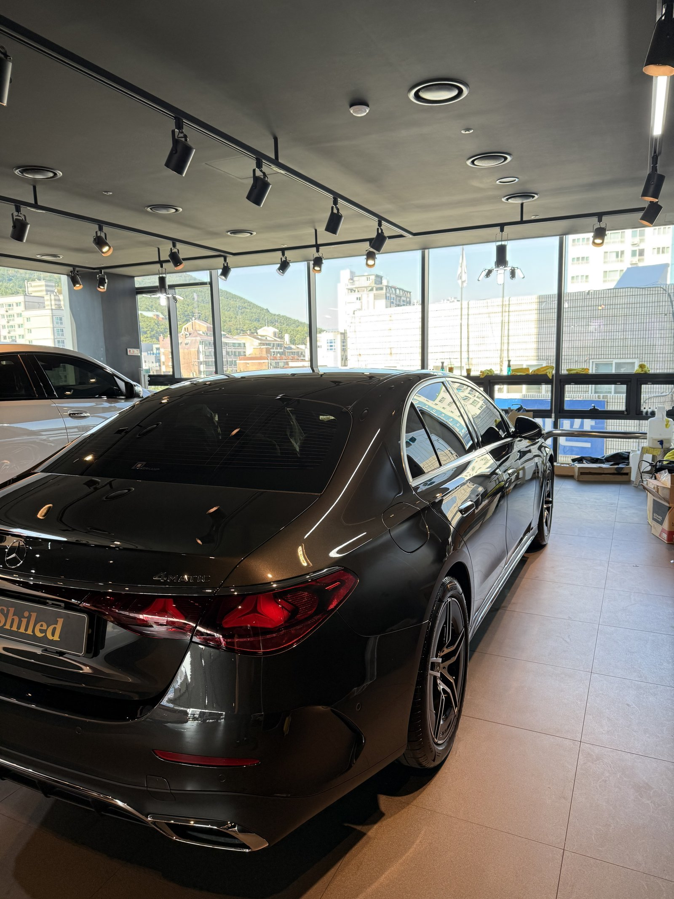
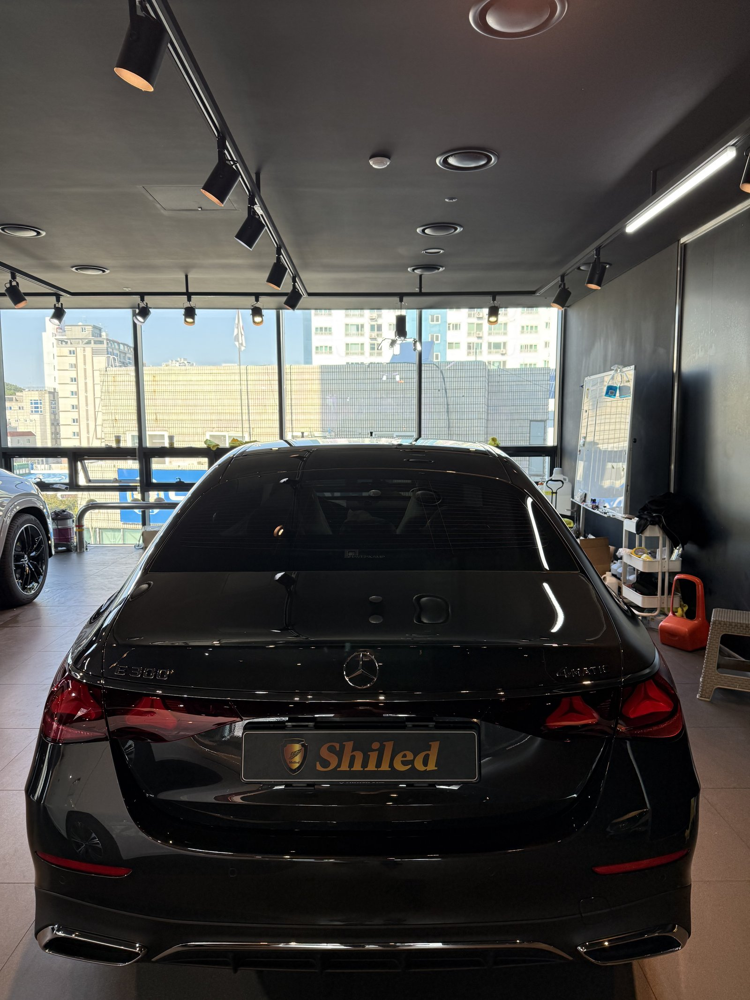
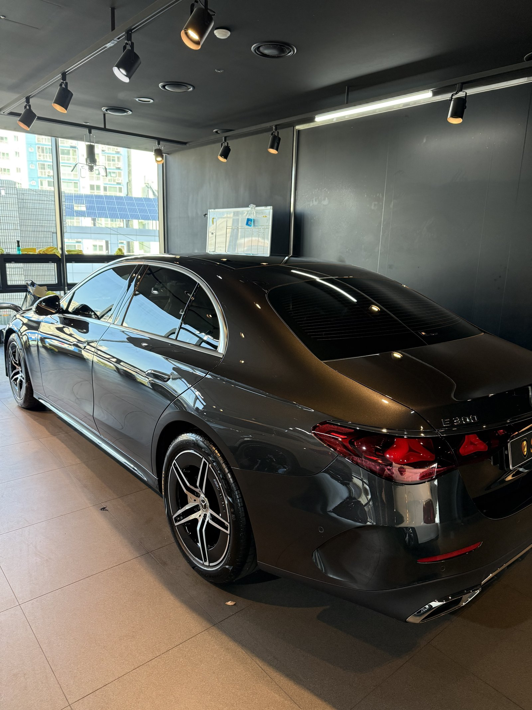
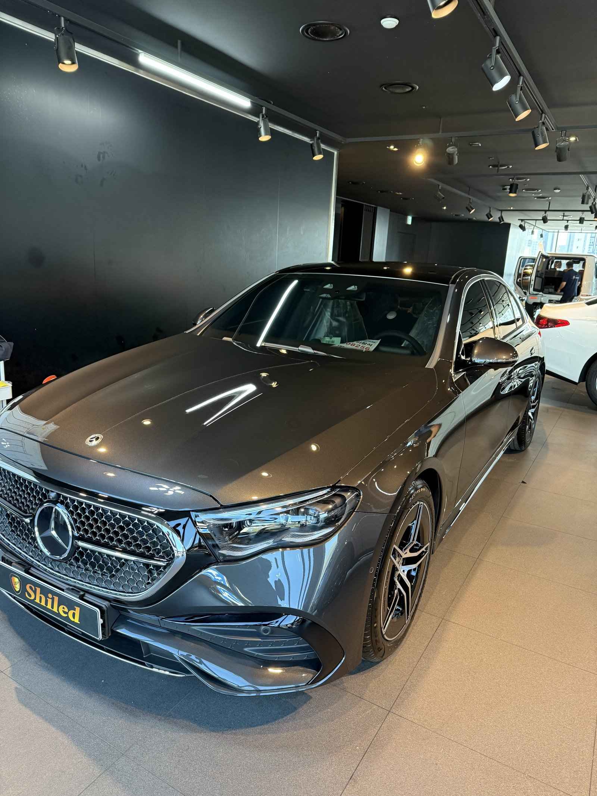
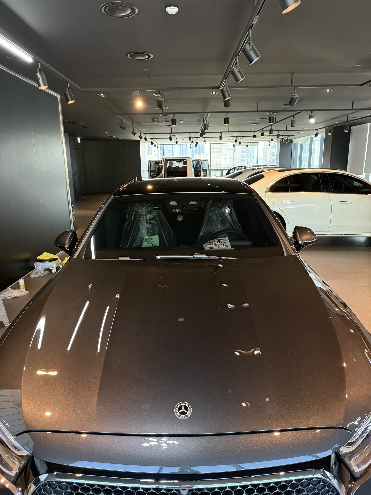
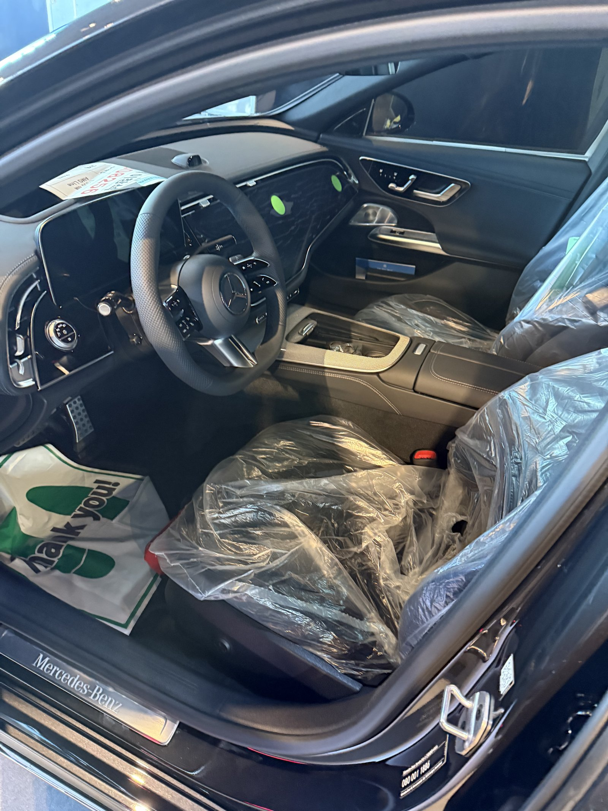
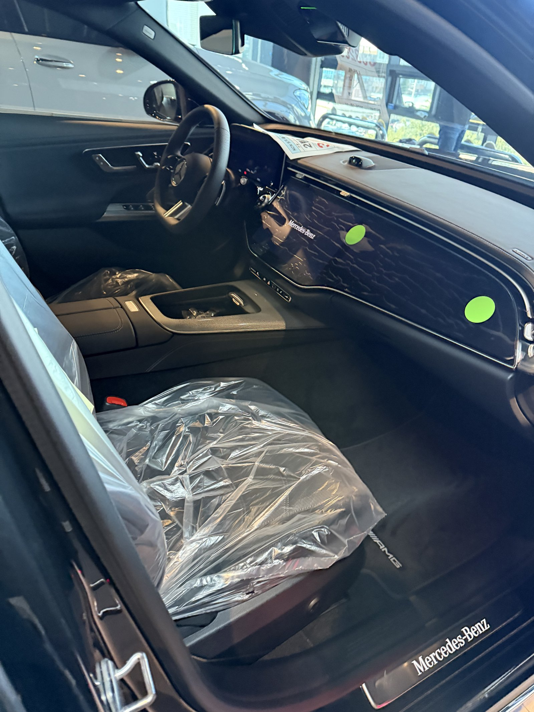
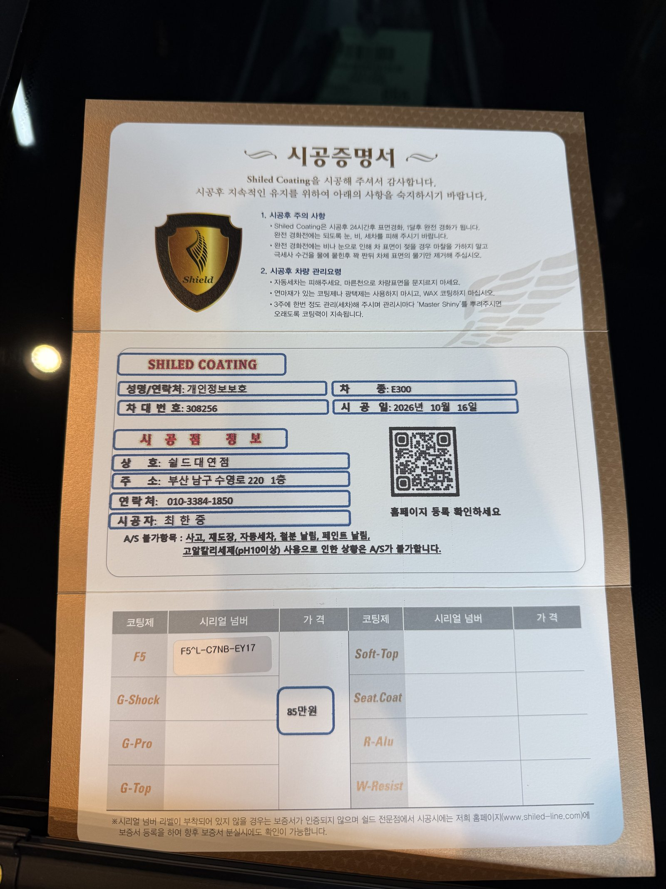

벤츠 E300 AMG라인, 그레이 신차입니다.
메탈릭 회색에 스타 패턴 그릴이 들어간 사양입니다.
부산 유리막코팅 작업의 E300 AMG 그레이 기록입니다.

그레이는 관리가 쉬운 색 아닌가요?
오염은 덜 보이지만, 광이 빠지면 바로 칙칙해 보이는 색입니다.
회색 메탈릭은 빛을 받을 때 알갱이가 반짝여야 제 색이 납니다.
표면이 탁해지면 그 반짝임이 먼저 죽습니다.


그레이 E300 AMG에 F5를 올린 이유
F5는 색감의 깊이와 글로시함에 특화된 코팅입니다.
메탈릭 알갱이가 깊게 보이도록 광의 깊이를 우선했습니다.
이번 부산 유리막코팅도 F5로 진행했습니다.
코팅제는 대표가 직접 개발·제조한 제품입니다.


기술자의 팁
그레이 차는 오염이 덜 보여 세차 주기가 길어지기 쉽습니다. 눈에 안 띄어도 2~3주에 한 번은 물세차로 표면을 비워 주셔야 메탈릭이 맑게 유지됩니다.


실내는 출고 전 그대로 지킵니다
실내는 보호 비닐이 씌워진 신차 상태 그대로입니다.
인도 전에 대표가 직접 최종 상태를 확인합니다.


시공증명서를 함께 드립니다
모든 시공 차량에 시공증명서를 드립니다.
차종·시공일·코팅제 시리얼 번호가 적혀 있고, 홈페이지에 등록해 보증을 받으실 수 있습니다. 이 차는 F5로 기록돼 있습니다.

차종·시공일·코팅제 시리얼이 기재된 시공증명서
자주 묻는 질문
Q. 그레이 메탈릭에는 어떤 코팅이 맞나요?
A. 이 차는 F5로 진행했습니다. 색감 깊이에 특화된 코팅이라 메탈릭 알갱이의 반짝임을 살리는 데 유리합니다.
Q. 그레이 차는 세차를 덜 해도 되나요?
A. 오염이 덜 보일 뿐 쌓이는 양은 같습니다. 눈에 띄지 않아도 정기적으로 물세차해 주셔야 메탈릭이 탁해지지 않습니다.
Q. 싱글·듀얼·트리플코팅은 어떻게 선택하나요?
A. 색감이 우선이면 F5, 스크래치 내성은 G-PRO, 발수·방오는 G-TOP이 중심입니다. 둘 이상을 원하시면 듀얼·트리플 조합으로 진행합니다.
Q. 왜 출고 전에 코팅하나요?
A. 도장면이 가장 깨끗할 때 올린 코팅이 가장 오래갑니다. 운행과 세차로 잔기스가 생기기 전에 입혀두는 것이 핵심입니다.
Q. 쉴드광택 위치와 예약은 어떻게 하나요?
A. 부산 남구 유엔로220 1F 쉴드광택입니다. 예약·상담은 010-3384-1850, 대표 최한중이 직접 상담하고 책임 시공합니다.
새 차일수록 시작점이 다릅니다. 가장 깨끗할 때 입혀두십시오.
제품을 직접 만드는 사람이 직접 시공합니다.
부산에서 신차 유리막코팅을 고민 중이시면 편하게 연락 주십시오.
어떤 차를 타냐보다 어떻게 타냐가 중요합니다~!
시공 중에는 전화를 받지 못할 때가 많습니다.
카카오톡으로 차종과 원하시는 시공을 남겨주시면 확인 후 답변드립니다.
쉴드광택 · 부산 남구 유엔로220 1F · 대표 최한중